User (Member) Tutorial
A comprehensive step-by-step guide for the Member role on the Sigalmark platform. This tutorial covers everything from creating your account to issuing, managing, and verifying blockchain-based certificates.
About the Member role
As a Member (USER), you can issue single and batch certificates, manage your issued certificates, view statistics, and verify certificates. You do not have access to organisation-level settings such as branding, billing, or member management — those are reserved for the Admin role.
1. Registration & Login
Before you can use Sigalmark, you need an account. This section walks you through registering, verifying your email, logging in, and recovering a forgotten password.
1.1 Register a New Account
- Navigate to the Sigalmark platform in your web browser.
- Click the Register link on the login page to open the registration form.
- Fill in the required fields:
- First Name and Last Name
- Email Address — use a valid email you have access to, as you will need to verify it.
- Password — choose a strong password (minimum 8 characters, with a mix of letters, numbers, and symbols recommended).
- Confirm Password — re-enter the same password to confirm.
- Click Register to submit the form.
- Check your email inbox for a verification message from Sigalmark. Click the verification link in the email to activate your account.
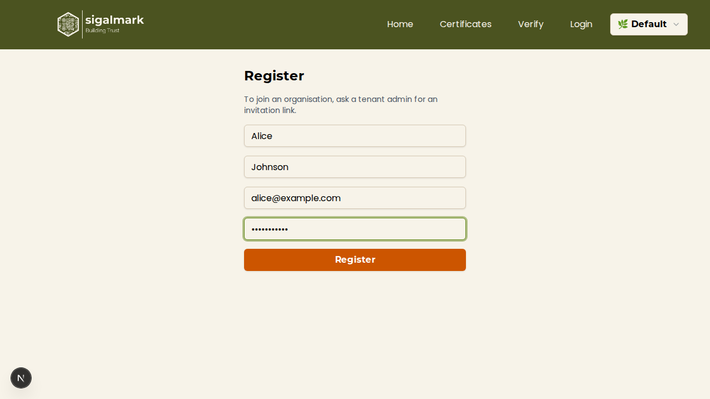
Note
If you do not receive the verification email within a few minutes, check your spam or junk folder. You cannot log in until your email is verified.
1.2 Log In to Your Account
- Go to the Sigalmark login page.
- Enter your Email Address and Password.
- Click Login.
- If you have enabled two-factor authentication (2FA), you will be prompted to enter the 6-digit code from your authenticator app. Enter the code and click Verify.
- After successful authentication, you will be redirected to the Certificates page.
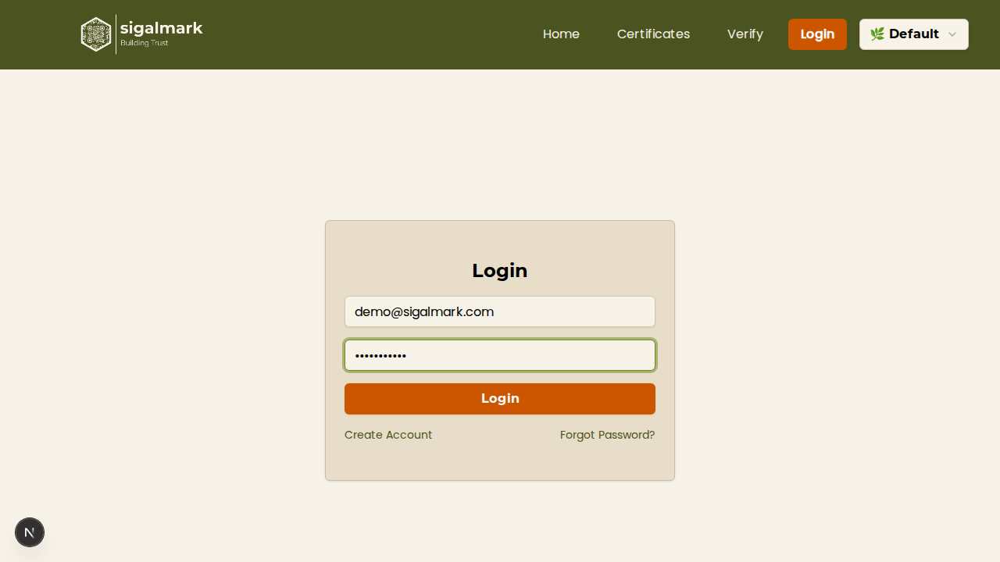
1.3 Forgot Password
If you have forgotten your password, you can reset it via email:
- On the login page, click the Forgot password? link.
- Enter the email address associated with your account.
- Click Send Reset Link.
- Check your email for a password reset message. Click the link in the email.
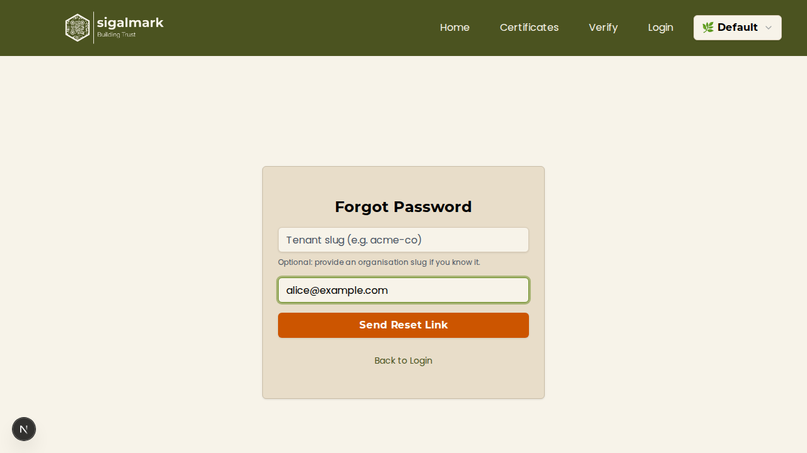
1.4 Reset Your Password
- After clicking the reset link in the email, you will be taken to the password reset page.
- Enter your New Password and confirm it in the Confirm Password field.
- Click Reset Password.
- Once the password has been reset successfully, you will be redirected to the login page. Log in with your new password.
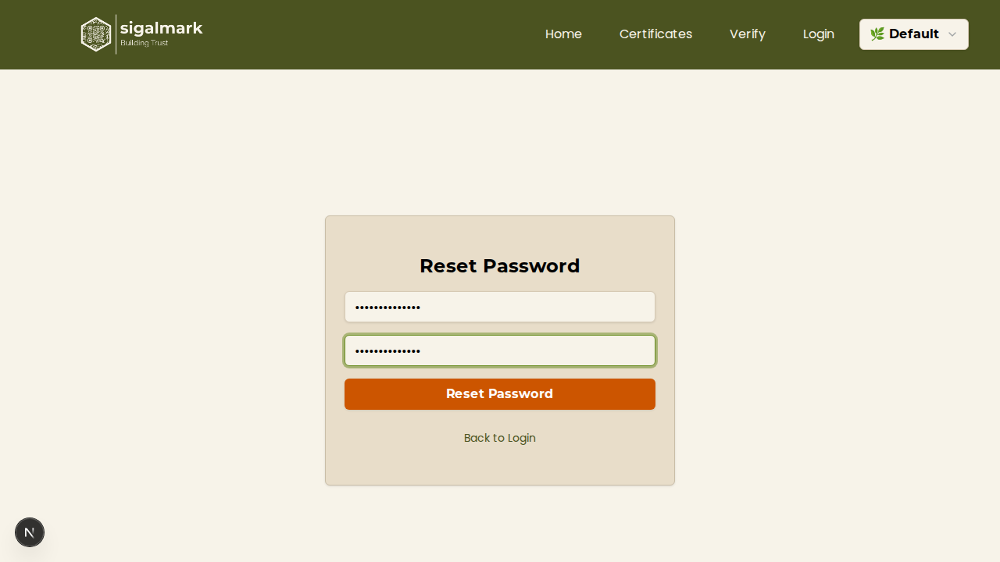
2. Profile Management
Your profile contains your personal information and security settings. You can update your details and enable two-factor authentication from the Profile page.
2.1 View and Edit Your Profile
- Click your name or avatar in the top-right corner of the navigation bar, then select Profile from the dropdown menu.
- On the Profile page, you can view and edit the following fields:
- First Name
- Last Name
- Phone Number
- Job Title
- Make your changes and click Save to update your profile.
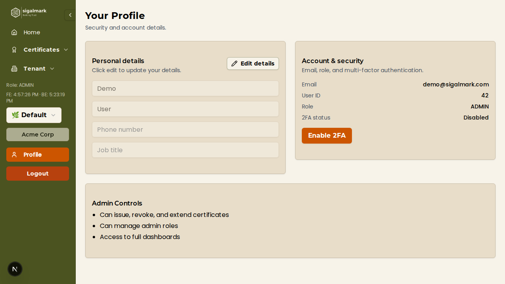
2.2 Enable Two-Factor Authentication (2FA)
Two-factor authentication adds an extra layer of security to your account. When enabled, you will need both your password and a time-based code from an authenticator app to log in.
- On the Profile page, locate the Two-Factor Authentication section.
- Click Enable 2FA.
- A QR code will appear on screen. Open your authenticator app (such as Google Authenticator, Authy, or Microsoft Authenticator) and scan the QR code to add the Sigalmark account.
- Your authenticator app will now display a 6-digit code that refreshes every 30 seconds.
- Enter the current 6-digit code from your authenticator app into the verification field on the Sigalmark page.
- Click Verify to confirm and activate 2FA.
- You will see a confirmation message indicating that 2FA has been enabled successfully.
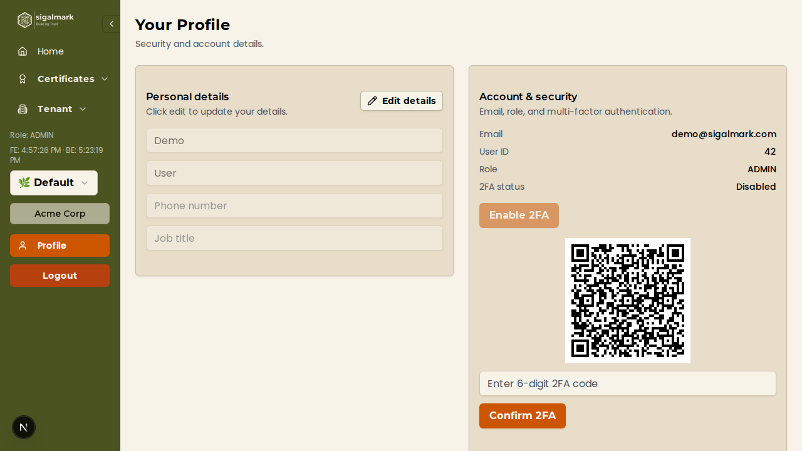
Important
Store a backup of your authenticator app data. If you lose access to your authenticator app, you will need to contact your organisation's Admin to regain access to your account.
2.3 Disable Two-Factor Authentication
- On the Profile page, locate the Two-Factor Authentication section. It will show that 2FA is currently enabled.
- Click Disable 2FA.
- You may be asked to enter your current 2FA code to confirm the action.
- Once confirmed, 2FA will be turned off for your account. You will only need your email and password to log in going forward.
3. Issuing Certificates
As a Member, you can issue digital certificates that are minted as ERC-721 NFTs on the blockchain. Certificates can be created one at a time or in bulk using a CSV file.
3.1 Create a Single Certificate
- Navigate to the Certificates page from the main navigation.
- Click the Create tab to open the certificate creation form.
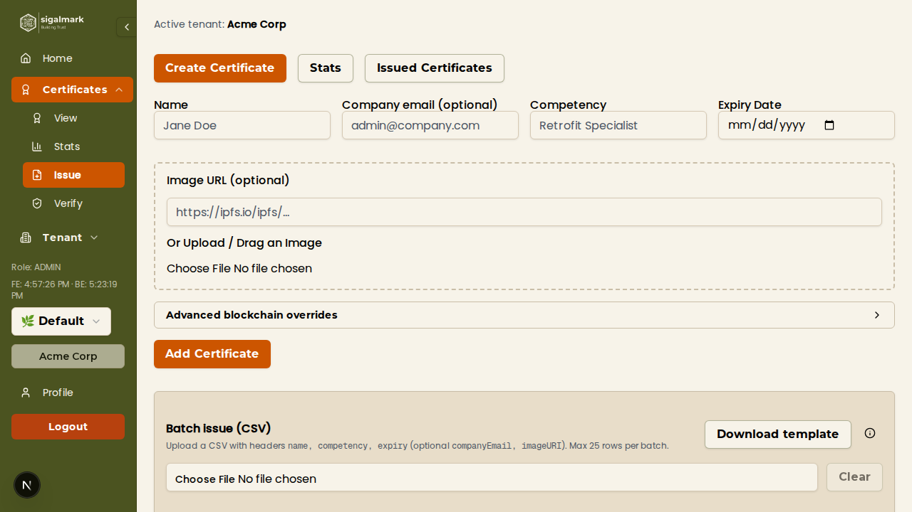
- Fill in the certificate details:
- Recipient Name (required) — the full name of the person receiving the certificate.
- Competency / Title (required) — the skill, qualification, or achievement being certified.
- Expiry Date (optional) — if the certificate has a validity period, set the date it expires. Leave blank for certificates that do not expire.
- Recipient Email (optional) — the email address of the recipient. If provided, they will receive an email notification with their certificate.
- Image (optional) — upload an image to be associated with the certificate (e.g., a photo of the recipient or a badge graphic).
- Review the information you have entered.
- Click Add Certificate to submit. The certificate will be created and queued for minting on the blockchain.
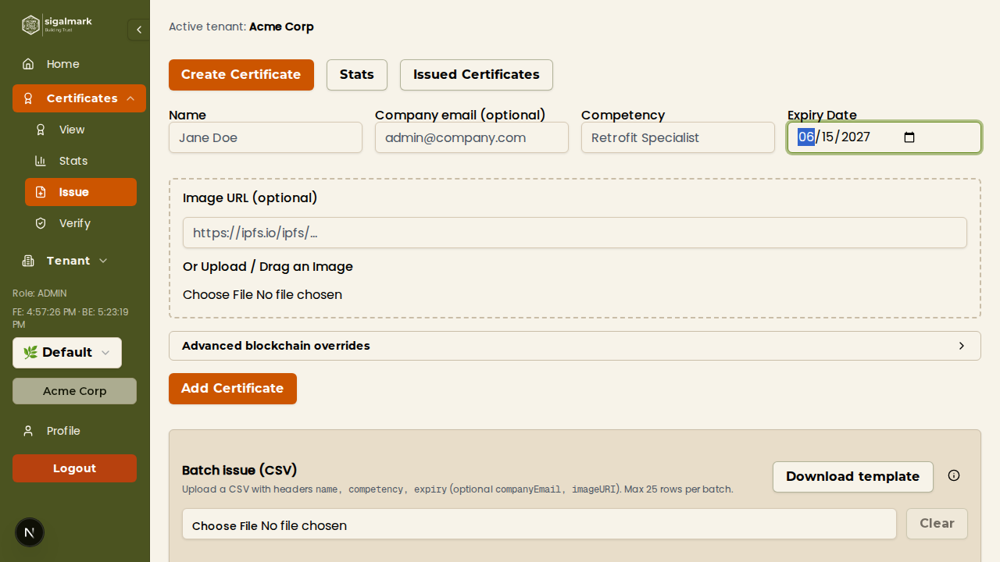
Note
Once a certificate is minted on the blockchain, its core data (recipient name and competency) cannot be changed. Double-check all fields before submitting.
3.2 Batch CSV Upload
If you need to issue multiple certificates at once, you can upload a CSV file containing all the recipient data.
- Navigate to the Certificates page and open the Batch Upload section.
- Click Download Template to get a pre-formatted CSV template file. Open it in a spreadsheet application or text editor.
- Fill in the CSV file with your certificate data. The CSV headers are:
- name (required) — recipient's full name.
- competency (required) — the skill or qualification.
- expiresAt (optional) — expiry date. Use the format
YYYY-MM-DD (e.g., 2027-06-15). Leave blank if the certificate does not expire.
- email (optional) — recipient's email address for notifications.
- imageURI (optional) — a publicly accessible URL to an image for the certificate. The URL must point directly to an image file (e.g., ending in
.png, .jpg, or .jpeg). If left blank, no image will be attached.
- Save the CSV file.
- Back on the Batch Upload section, click Upload CSV (or drag and drop the file) to upload your prepared file.
- Sigalmark will parse the CSV and display a preview of the certificates to be created. Review the preview carefully to check for any errors or missing data.
- If everything looks correct, click Mint Batch to issue all the certificates. They will be minted on the blockchain in a single batch operation.
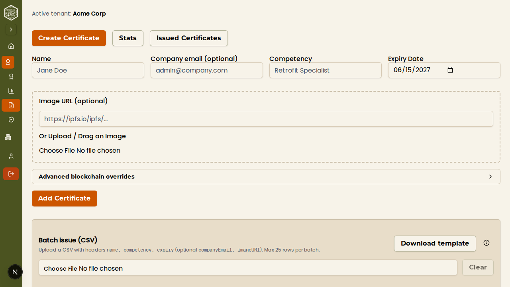
CSV Tips
- Date format must be
YYYY-MM-DD. Other formats (e.g., DD/MM/YYYY) will be rejected.
- The
imageURI field must be a full URL starting with https://. Relative paths and local file paths are not supported.
- Click the info button next to the upload area for a quick reference on date formatting and imageURI rules.
- Ensure your CSV is saved with UTF-8 encoding to avoid character issues.
4. Managing Certificates
After issuing certificates, you can view, search, and manage them from the certificate list.
4.1 Certificate List View
- Navigate to the Certificates page. The default view shows the List tab with all certificates issued by your organisation.
- Use the search bar to find certificates by recipient name or competency.
- Use pagination controls at the bottom of the list to navigate through large numbers of certificates.
- Each certificate in the list shows its status:
- Active — the certificate is valid and has been minted on-chain.
- Pending — the certificate is being processed or awaiting minting.
- Expired — the certificate has passed its expiry date.
- Revoked — the certificate has been revoked and is no longer valid.
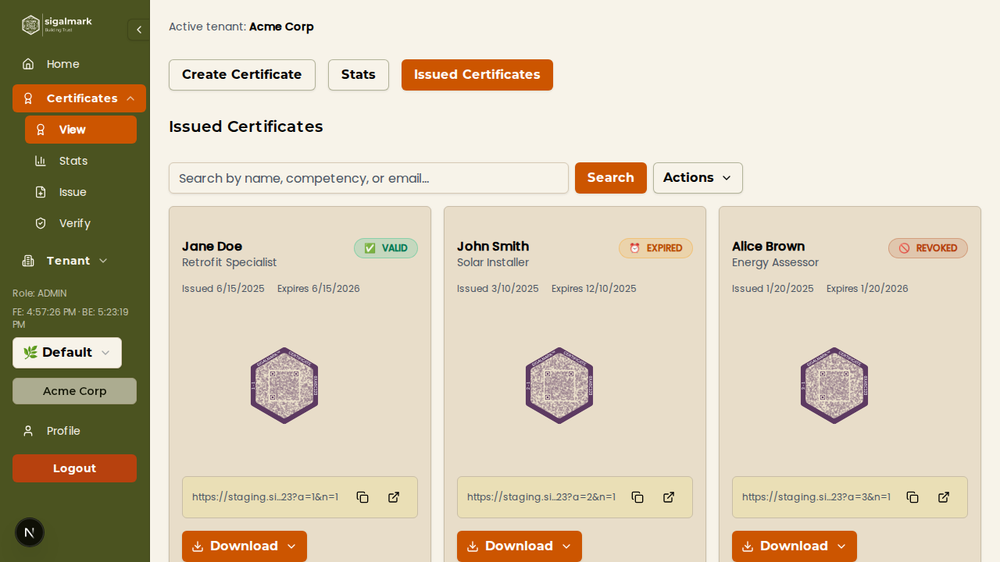
4.2 Certificate Actions
From the certificate list, you can perform several actions on individual certificates:
Revoke a Certificate
- Find the certificate you wish to revoke in the list.
- Click the actions menu (three dots or the Actions button) on that certificate's row.
- Select Revoke.
- Confirm the revocation when prompted. This action is recorded on the blockchain and cannot be undone. The certificate's status will change to Revoked.
Extend Expiry Date
- Find the certificate whose expiry you want to extend.
- Click the actions menu and select Extend Expiry.
- Choose a new expiry date (must be later than the current expiry date).
- Confirm the change. The updated expiry date will be reflected on-chain.
Email Certificate to Recipient
- Click the actions menu for the desired certificate.
- Select Email to Recipient.
- If the certificate has a recipient email on file, the system will send an email containing the certificate details and a verification link. If no email is on file, you will be prompted to enter one.
Export Certificates as CSV
- From the certificate list page, click the Export CSV button.
- A CSV file containing all your certificates (with their details and statuses) will be downloaded to your computer.
Bulk Renew Certificates
- Select multiple certificates using the checkboxes in the list view.
- Click the Bulk Renew button that appears when certificates are selected.
- Choose a new expiry date to apply to all selected certificates.
- Confirm the renewal. All selected certificates will have their expiry dates updated.
5. Viewing Statistics
The statistics dashboard provides an overview of your certificate activity, including how many certificates have been issued and how often they have been verified.
- Navigate to the Certificates page and click the Stats tab.
- The dashboard displays key metrics including:
- Total Certificates Issued — the number of certificates your organisation has created.
- Verification Counts — how many times your certificates have been verified (scanned or looked up).
- Active vs. Expired vs. Revoked — a breakdown of certificate statuses.
- Use this information to track adoption and engagement with your issued certificates.
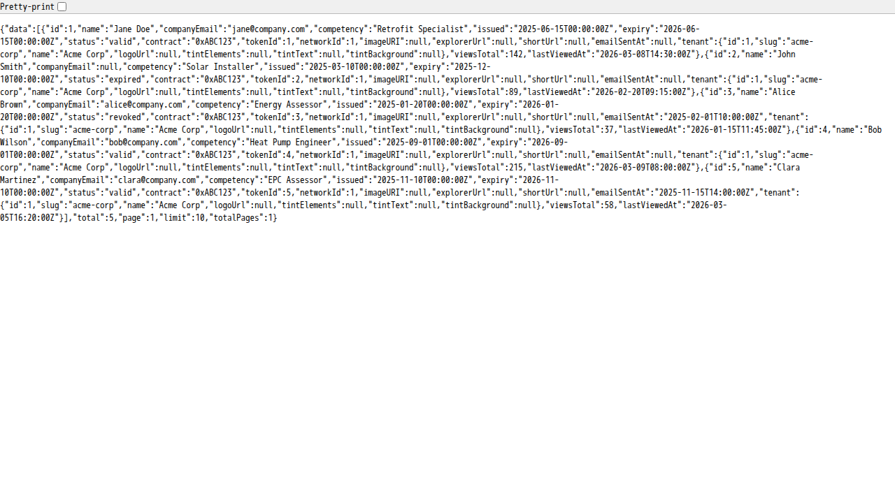
6. Verifying Certificates
Sigalmark provides multiple ways to verify the authenticity of a certificate. Verification reads data directly from the blockchain, ensuring that the certificate is genuine and has not been tampered with.
6.1 Verify via QR Code
- Navigate to the Verify page from the main navigation (this page is publicly accessible and does not require login).
- You have two options for QR code verification:
- Camera Scan — click the camera icon or Scan QR Code button, then point your device's camera at the certificate's QR code.
- Upload Image — if you have a screenshot or photo of the QR code, click Upload and select the image file from your device.
- The system will automatically decode the QR code and retrieve the certificate details from the blockchain.
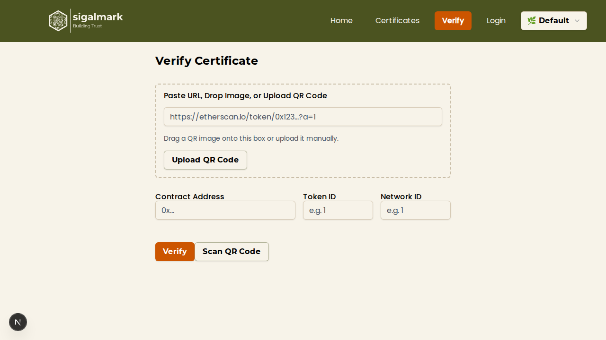
6.2 Verify via URL
- On the Verify page, locate the URL input field.
- Paste the full certificate verification URL (e.g., a short link from
sm1.it or a full Sigalmark verification URL).
- Click Verify. The system will resolve the URL and fetch the certificate data from the blockchain.
6.3 Verify via Manual Input
If you have the raw blockchain details of a certificate, you can verify it manually:
- On the Verify page, switch to the Manual Input section.
- Enter the following three fields:
- Contract Address — the Ethereum contract address of the issuing organisation (e.g.,
0x1234...abcd).
- Token ID — the unique token identifier of the certificate on the blockchain.
- Network ID — the blockchain network ID where the certificate was minted (e.g.,
1 for Ethereum Mainnet, 137 for Polygon).
- Click Verify to look up the certificate on-chain.
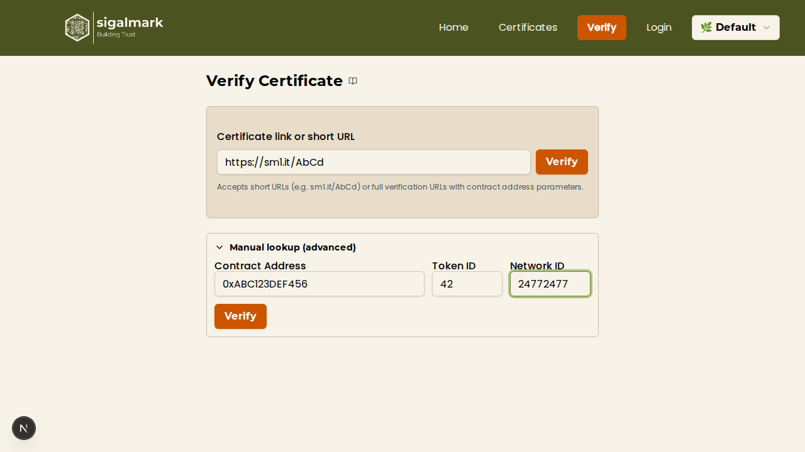
6.4 Reading Verification Results
- After a successful verification, the results page will display the certificate details:
- Recipient Name — who the certificate was issued to.
- Competency — the certified skill or qualification.
- Issuing Organisation — the name and branding of the organisation that issued it.
- Issue Date — when the certificate was minted.
- Expiry Date — when the certificate expires (if applicable).
- Status — whether the certificate is Active, Expired, or Revoked.
- A clear "Certificate validated" message confirms the certificate is authentic and recorded on the blockchain.
- If the certificate has been revoked or cannot be found, an appropriate warning or error message will be displayed instead.
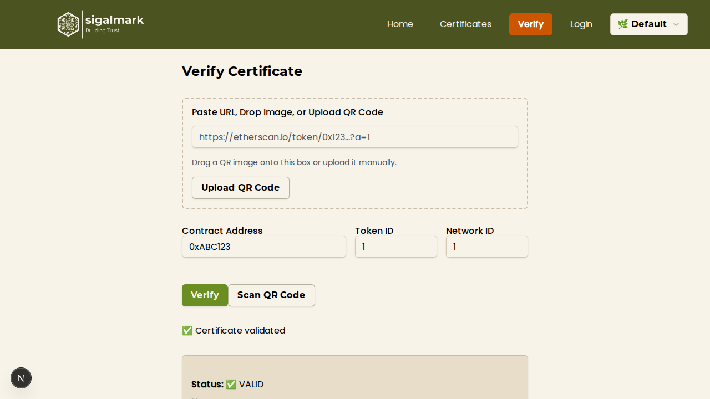
7. Mobile App
Sigalmark also offers a mobile application for verifying certificates on the go. The mobile app is designed for quick, camera-based verification and includes visual tamper detection.
7.1 Overview
- Download and install the Sigalmark mobile app from your device's app store (available for both Android and iOS).
- Open the app and grant camera permissions when prompted. The app opens directly to the QR scanner view.
- Point your camera at a Sigalmark certificate's QR code. The app will automatically detect and scan the code.
- The app decodes the QR code, retrieves the certificate data from the blockchain, and displays the verification result on screen.
- The result screen shows the same information as the web verification page: recipient name, competency, issuing organisation, dates, and validation status.
- The app includes visual tamper detection, which analyses the QR code for signs of alteration or forgery. If the QR code appears to have been modified, a warning will be displayed.
Tip
The mobile app does not require you to log in. It is designed purely for verification and can be used by anyone — certificate recipients, employers, auditors, or any third party who needs to confirm a certificate's authenticity.
7.2 When to Use the Mobile App
- In-person verification — when someone presents a printed certificate and you need to quickly confirm its validity.
- Events and conferences — for checking attendee credentials on site.
- Audits — for bulk verification of physical certificates.
Next steps
- For more detail on certificate fields and options, see the Certificates guide.
- For advanced batch upload guidance, see the Batch Upload guide.
- For common questions, visit the FAQ.
- If you are an Admin, see the Admin Tutorial for organisation management features.